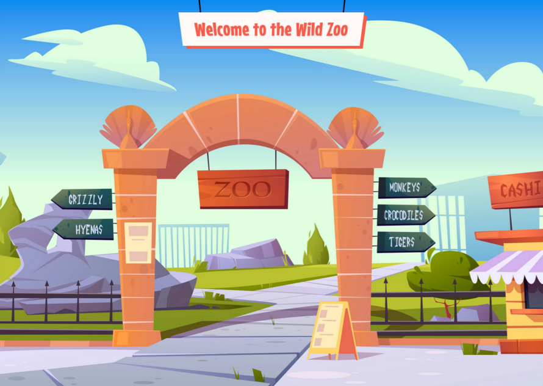

POO1 - Introduction à la Programmation Orientée Objet
Introduction
Bienvenue au Wild Zoo !
Dans cette série de quêtes, tu vas découvrir les bases de la programmation orientée objet.
Pour t'aider à mieux comprendre ces nombreux concepts, tu travailleras sur le thème d'un parc zoologique et une interface web te sera fournie, évoluant de quête en quête. Elle te permettra ainsi de "visualiser" les différents concepts que tu vas manipuler (classe, objet, héritage, abstraction, interface, exception...).
Un dépôt git t'accompagnera tout au long des quêtes, tu devras te positionner sur la branche correspondant à la quête en cours (poo1, poo2... il n'y a pas de branche main), puis lancer ton serveur PHP. Les instructions de la quête t'indiqueront ensuite les fichiers à modifier, pas à pas, et les impacts que cela aura sur l'interface web. Les zones que tu as le droit de modifier seront clairement indiquées. Le reste du code fourni permet de gérer tout l'affichage, tu n'as pas à y toucher (mais tu as le droit de le regarder si tu es curieux :D)
🖥️ Commence par récupérer ce dépôt du Wild Zoo et place toi sur la branche poo1, puis lance ton serveur sur le dossier public (php -S localhost:8000 -t public).
Tu devrais obtenir une page qui ressemble à :

C'est bon ? La visite peut commencer !🤓 À la fin de cette quête, tu seras capable de :
- ✅ Comprendre ce qu'est la POO et pourquoi l'utiliser,
- ✅ Définir une classe,
- ✅ Instancier un objet.
Qu'est-ce que la POO ?
La Programmation Orientée Objet ou POO est un paradigme de programmation, né dans les années 60. Un paradigme, c'est une manière de (conce)voir les choses. Tu connais déjà la programmation procédurale (une instruction après l'autre), c'est ce que tu as fais jusqu'à maintenant en PHP. La POO est utilisée dans de nombreux langages, de manière plus ou moins poussée, parmi lesquels C++, Java, Python, Ruby, PHP, etc. On utilise le terme de "langage objet" pour désigner un langage implémentant le modèle de Programmation Orientée Objet. Certains langages comme Java ne fonctionnent qu'en POO, tandis que d'autres comme PHP, permettent de programmer en objet ou non.
Remarque
En anglais, POO s'écrit OOP (Object Oriented Programming); poo signifiant tout à fait autre chose. Ne sois pas étonné des résultats étranges que tu pourrais trouver suite à des recherches sur internet. Petit rappel au passage : effectue toujours tes recherches en anglais, cela évitera bien des quiproquos ;-)
Pourquoi faire de la POO ?
Lorsque tu dois manipuler des données, jusqu'à maintenant, tu stockes généralement les informations dans des variables. Puis lorsque tu dois interagir sur ces données, tu vas par exemple les passer en paramètre à une fonction, qui te retournera un résultat, qui lui même pourra être stocké dans une autre variable, passée à une autre fonction, etc.
Commençons à nous projeter dans notre zoo. Tu dois gérer des animaux de toutes sortes (des poissons, des insectes, des mammifères de toutes tailles, avec des régimes alimentaires différents...).
$lion = ['name' => 'lion', 'size' => 100, 'isCarnivorous' => true, 'pawNumber' => 4];
$elephant = ['name' => 'elephant', 'size'=>1000, 'isCarnivorous' => false, 'pawNumber' => 4];
$parrot = ['name' => 'parrot', 'size' => 10, 'isCarnivorous' => true, 'pawNumber' => 2];
Tout fonctionne très bien. Cependant, au fur et à mesure que ton application va se complexifier, tu vas ajouter de nouvelles clés à ton tableau associatif, qui risque de devenir difficile à lire. Le problème majeur ici, c'est que rien ne formalise clairement ce qu'est un animal. Un futur développeur pourrait très bien écrire :
$spider = ['description' => 'spider', 'size' => 'small', 'paws' => 8];
Ce tableau est tout à fait acceptable pour définir un nouvel animal, mais il n'est pas cohérent avec les autres. À un moment donné, la manipulation de ces tableaux risque de poser problème.
Le constat est qu'en programmation procédurale, il n'y a rien qui "force" une manière d'uniformiser un concept (ici, l'animal). Tout repose sur le développeur, qui doit suivre un format précis. C'est possible avec une bonne documentation, mais cela augmente les risques d'erreurs ou d'incohérences au fur et à mesure qu'un projet se complexifie et que le nombre de développeurs augmente. L'idée est de trouver un moyen de ne plus faire reposer cette recherche de cohérence sur le développeur, mais dans le code lui-même. Cette vidéo introduit très bien le concept de POO en reprenant les différences avec la programmation procédurale. Si tu ne comprends pas tous les termes pour le moment pas de panique, cela sera plus clair au fur et à mesure de ton avancée sur les quêtes.
C'est la classe !
La POO apporte une solution au problème exposé précédemment. Elle repose en effet sur un élément fondamental : la classe. La classe permet de définir/modéliser un concept à manipuler. Cette modélisation est la partie la plus importante, il faut décider de ce dont tu as besoin pour définir correctement un concept.
Reprenons l'exemple de l'animal. On va décider pour le moment qu'un animal est représenté par 4 caractéristiques : son nom, sa taille, son régime alimentaire et son nombre de pattes. Voilà à quoi va ressembler la classe Animal :
<?php
// src/Animal.php
class Animal
{
public string $name;
// size expressed in whatever unit
public int $pawNumber;
public bool $isCarnivorous;
}
Ouvre le fichier src/Animal.php, tu dois y trouver le même code.
Décortiquons un peu ces lignes. Tout d'abord, côté bonnes pratiques en PHP, chaque classe doit être définie dans son propre fichier, et ce fichier doit avoir exactement le même nom que la classe (ici, la classe Animal se trouve dans le fichier Animal.php).
Important
Même si ce n'est pas une obligation de PHP (tu pourrais mettre plusieurs classes dans un même fichier), si tu ne suis pas cette règle, ton code ne fonctionnera plus dès que tu utiliseras d'autres concepts comme les namespaces et l'autoloading (abordés dans une future quête). Donc garde en tête une classe = un fichier du même nom.
Ensuite, une classe se définit via le mot clé class, suivi du nom de la classe en PascalCase (ou UpperCamelCase, c'est comme le camelCase mais ça commence par une majuscule), et doit toujours suivre les bonnes pratiques de nommage : intelligible, en anglais, etc. Les accolades (la première étant à la ligne selon les normes PSR) permettent de définir le corps de la classe et tu devras tout écrire à l'intérieur de celles-ci.
Garde en tête qu'il n'y a pas de définition absolue d'un concept, cela dépend avant tout du contexte métier, un animal pourra être défini différemment si tu l'utilises dans le cadre d'un zoo, d'un cabinet de vétérinaire, d'une étude de biodiversité...)
Dans ces accolades, nous retrouvons les quatre informations qui, dans le cas du Wild zoo, sont utiles pour définir un Animal. Ces informations sont appelées propriétés (ou parfois arguments) et peuvent prendre des valeurs. La classe pourra également contenir des méthodes (des fonctions internes à la classes) afin de manipuler ses propriétés. Nous reviendrons plus en détail sur ces notions dans les prochaines quêtes.
Classe vs Objet
À partir de cette classe Animal, que tu peux comparer à un moule, il va être possible de créer différents animaux. C'est ce qu'on appelle les objets ou instance d'une classe. Ainsi la classe est la définition générique, l'objet est un représentant de cette classe, avec des valeurs spécifiques pour ses propriétés.
Pour créer/instancier des objets, nous allons travailler dans le fichier public/index.php du projet Wild Zoo (tu trouveras sensiblement le même code dans le fichier, il faut juste le décommenter) :
<?php
// public/index.php
require __DIR__ . '/../src/Animal.php';
$animal1 = new Animal();
$animal2 = new Animal();
Tu dois d'abord require (c'est à dire spécifier qu'on a besoin d'importer tel fichier) la classe que tu souhaites utiliser, ici Animal dans le dossier src/.
Puis tu vas utiliser le mot clé new pour instancier ton objet. Tu peux créer autant d'objets que tu le souhaites à partir d'une même classe, ils auront chacun les mêmes propriétés, mais avec des valeurs différentes. Ces différents objets issus de la même classe s'appellent des instances. Toutes ces instances suivent un même schéma et c'est ça qui est vraiment intéressant avec la POO. Un objet contient des propriétés qui lui sont indissociables, puisque définis à l'intérieur de la classe, c'est ce qu'on nomme l'encapsulation.
Tu verras dans la prochaine quête comment modifier les valeurs des propriétés de cet objet, mais comprend qu'un utilisateur de ta classe ne pourra pas créer un objet Animal qui ne suivrait pas la définition faite dans la classe. Le problème rencontré avec l'utilisation d'un tableau est donc résolu. Tu verras par la suite plein d'autres mécanismes que propose la POO pour des cas plus complexes. Regarde dans ton navigateur, tu vois apparaitre les 2 animaux (pour l'instant indéfinis puisque les propriétés n'ont pas de valeur).
🖥️ Effectue maintenant un var_dump() de $animal1 puis de $animal2, tu devrais voir quelque chose comme :
object(Animal)[1]
public string 'name' => *uninitialized*
public float 'size' => *uninitialized*
public int 'pawNumber' => *uninitialized*
public int 'isCarnivorous' => *uninitialized*
object(Animal)[2]
public string 'name' => *uninitialized*
public float 'size' => *uninitialized*
public int 'pawNumber' => *uninitialized*
public int 'isCarnivorous' => *uninitialized*
Les résultats sont similaires (aucune valeur n'est encore affectée aux propriétés) mais l'identifiant de l'objet (entre les crochets sur la première ligne du var_dump()), diffère. Chaque objet est bien unique et pourra évoluer au fil du temps sans impacter les autres objets de la même classe. Tu peux ensuite retirer les var_dump.
🖥️ Instancie un objet $animal3 et ajoute le au tableau $animals. Si tu réactualises, l'interface prends bien en compte ce nouvel animal ! Super, ton zoo se remplit ;-)
Qu'est-ce que l'objet ?
💪 Challenge
- Dans ton navigateur, tu dois voir les trois animaux correspondants aux trois objets instanciés.
- Répond ensuite au quizz pour valider la quête.